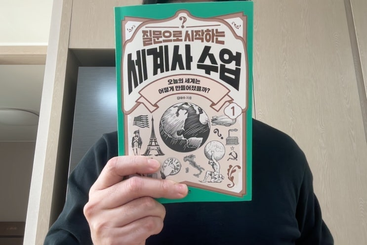
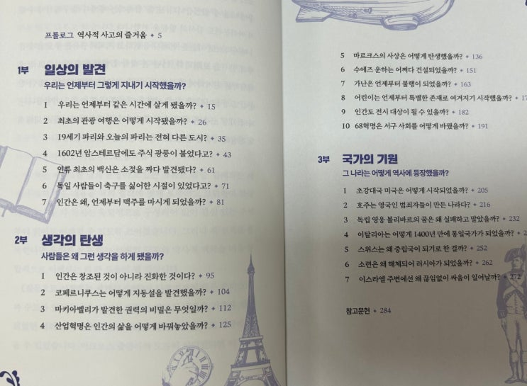
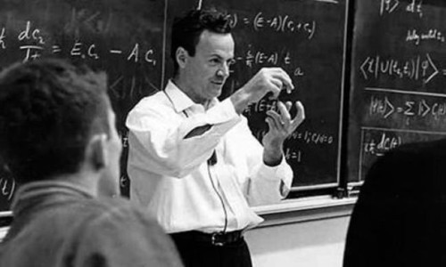

제가 좋아하는 유투버인 '함께하는 세계사' (김태수 박사님) 의 책 버전이 나왔다길래 팬심으로 서둘러 구입하여 보았습니 다.
https://www.youtube.com/@historytogether
함께하는 세계사 역사 연구자와 서양사의 다양한 주제들에 대해 함께 이야기를 나누는 공간입니다
www.youtube.com
김태수 박사님 유투브 초기 때 부터 챙겨 보았는데, 정말 좋은 유툽 체널입니다. 경제적 자유를 얻는다, 자신감을 얻는다, 성공한다, 여자가 따른다 이런 이상한 사짜들 나와서 지랄하는거 보지 마시고 네 제가 다 봐본거 맞습니다
밖에서 산책하면서 또는 운전하면서 이런 유익한 영상 들으시길 추천합니다. 동영상은 거의 의미가 없고, 제가 좋아하는 리스펙 님 처럼 듣기만 해도 충분한 라디오 스타일의 컨텐츠들입니다
컬투쇼 베스트도 운전하다 졸리면 듣기 좋습니다
제가 김태수 박사님을 좋아하는 이유는 일단 실제 역사를 박사후 과정까지 전공한 사람이고, 그럼에도 불구하고 현학적이 거나 자극적이지 않은 특유의 담백한 서술 때문입니다.
유툽이나 티비를 보면 입만 재미있게 털거나 외국애들이 쓴 거 적당히 짜집기 해서 자극적으로 유창하게 말하는 사짜들이 많은데, 김태수 박사님 내용을 들어보면 확실히 전공자라 그런지 역사에 대해 공부나 이해의 깊이가 차원이 다릅니다
누구처럼 학력이 가짜가 아니무니다. 거기에 MSG가 없는 담백한 사찰 음식 같은 박사님의 이야기를 듣다 보면, 아 그렇지. 역
사란게 이런거였지. 하는 생각도 듭니다.
말로만 하면 그러니 여기 한번 비교해 보죠.
일단 MSG 뜸뿍 넣은 짜장면 같은 자극적인걸 한번 보시고~~~ https://youtu.be/cq_Q6V9tLzM?si=dO60AHXrCFiD5Ykp 다음은 기름기 없는 사찰음식 김태수 박사님의 유툽을 들어보자.
https://youtu.be/bH8ohiB8mXY?si=dLRk3Xhkls1jpqkW (짜장면집이 사찰 음식 집 보다 손님이 많은 건 당연한건가... ㅋㅋㅋ)
암튼 팬심으로 늘 챙겨보는 유툽인데, 책이 나왔다니 못참지. 바로바로 사서 확인.
제목답게 여러가지 질문을 가지고 세계사의 일부분씩을 소개하는 형태로 책이 구성이 되어있는데, 크게 세 가지 챕터로 구성이 되어있습니다.

첫 번째 부분은 '일상의 발견' 으로 '우리가 살고 있는 근대적 일상이 서양 세계에서 어떻게 시작되었는가' 에 대한 내용입니다. 이 챕터에서는 지금은 너무나도 당연한 한 나라가 같은 시간을 쓰게 된 이유, 인스타만 켜도 쏟아져 나오는 세계 여행의 시작 과정 등을 소개합니다.
두 번째 부분은 '생각의 탄생' 으로 주요 사상이 태동한 과정을 소개합니다. 다윈읜 진화론, 마키아벨리의 마키아벨리즘, 산업혁명 등을 과학이나 철학이 아닌 역사적 배경을 통해 맥락을 설명합니다.
마지막 세 번째 부분은 '국가의 기원' 으로 여러 국가의 건국 역사에 대해 흥미롭게 서술합니다. 미국이 어떻게 시작한 나라인지, 스위스는 왜 중립국이 된 것인지, 이스라엘을 어떻게 세워진 것인지 등을 세계사적 맥락으로 담담히 서술합니다.
이렇게 세 부분으로 책을 구성한 이유에 대해서 저자인 김태수 박사님은 '세계사란 단순히 지식이 아니라 그렇게 진행된 맥락을 이해해야 하기 때문' 이라고 책머리에서 설명합니다. 저도 역사란 이렇게 이해해야 하는 것이라고 보기 때문에 김태수 박사님 의견에 적극 동의합니다.
책 자체는 유튜브 대본 내용을 편집한 것으로 가끔씩 읽다보면 완전히 똑같은데(...) 하는 부분이 있습니다. 내용은 교양 수준의 내용으로 어린이들도 쉽게 읽고 이해할 수 있을 정도입니다. 매우 맥락에 잘 맞게 쉽게 구성되어 있어 머리에 쏙쏙 내용이 들어오는 체험을 하실 수 있는데, 역시 제대로 공부한 사람은 쉽게 남에게 설명한다는 파인만 박사님의 명언이 또 맞아 떨어지는 순간입니다.
https://brunch.co.kr/@saetae/48

리처드 파인만 학습 기술 배움의 기술 | 리처드 파인만은 아무도 이해하지 못한다는 양자역학으로 노벨상을 받았다. 파인만은 물리학 분야에서의 성과뿐 아니라 교육자로서도 유명했다. 복잡한 것들을 간단한 용어로 누구나 쉽게 알아들 수 있게 설명할 수 있는 능력자였 다. 그는 전문용어와 공허한 단어들을 사용하고 복잡하게 설명하는것은 잘 모르기 때문이라고 말 했다. 다음은 리처드 파인만이 제시한 학습 4단
brunch.co.kr
제가 김태수 박사님을 매우 높게 평가하는 또 하나의 이유는 세계사를 대중에 설명하면서 함부로 자신의 사상을 녹여내지 않는 다는 것입니다. 현대의 역사학자들은 역사를 일종의 해석으로 이해하는데, 그 자체는 맞다고 봅니다만 저는 그러한 경향이 자신의 과도한 사상을 역사에 녹여내서 대중들에게 위험한 생각을 전달하는데 잘못 사용되는 경우가 너무 많다고 생각합니다.
대중들이 자연스럽게 세계사를 즐겁게 배우면서, 의도치 않게 작가가 가지고 있는 작가만의 생각을 흡수하게 되거든요. 그러한 의도치 않은 흡수가 나중에 사람으로 하여금 왜곡된 생각을 가지게합니다. 펜이 칼보다 위험한 이유이기도 하구요.
예를 들면 우리나라의 르네상스맨 유사시민님이나 일본의 BL 작가 시오노 나니? 님 같은 경우 과거 그런 책을 꽤 많이 쓰셨죠. (물론 이분들을 역사학자라고 할 순 없기에 아마추어의 팬픽 정도로 현대판 삼국지연의 관대하게 봐주면 꽤 재미있 기도 하고 괜찮기도합니다)
이 책을 읽고나서 저는 이 책을 집사람에게 주면서 반드시 딸에게 읽히라고했습니다. 그만큼 어린이들도 쉽게 왜곡된 생각에 오염될 위험 없이 접근할 수 있는 좋은 책입니다. 다만 역사서라는 것이 개인의 취향을 탈 수 있는 것이고, 인생을 살아가며 매우 중요한 실용적인 지식서는 아니기 때문에 다른 위대한 소설들 처럼 소장점수가 낮은 편입니다. 이 점을 본 블로그 내용을 끝까지 읽어신 분들께 다시한번 말씀드립니다 (이래서 제목만 보면 안되는 겁니다 ㅋㅋ)
다들 즐거운 독서 되세요.
끝.